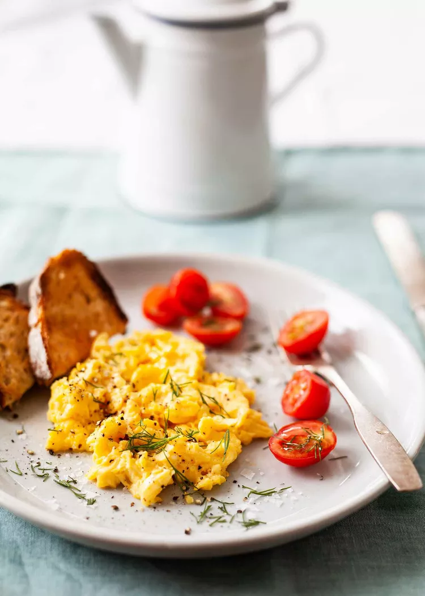

Home
Scrambled Eggs

The best scrambled eggs anyone on the planet has ever had. Guaranteed to make your mouth water.
Unlike SOME PEOPLE, I like to make my eggs on LOW heat with LOVE!!
Ingredients:
- 6 pasture raised eggs
- 2 tablespoons grassfed butter
- 30 ml whole milk or half and half
- 3 pinches of salt
- 1 - 2 dabadooyahs of requeijao
Directions:
- Crack eggs one at a time into a small bowl and ensure the egg is not spoiled while removing any small pieces of shell before adding to a larger mixing bowl.
- Combine milk or half and half into larger mixing bowl with all 6 eggs
- With a fork or whisk, beat eggs until there is a uniform color. You may see some bubbles floating to the top which is ideal.
- Heat frying pan on medium heat and immediately add butter. The melted butter should fully coat the frying pan.
- Pour eggs into frying pan as soon as the butter is melted and reduce to low heat.
- Add 1 pinch of salt for every 2 eggs
- Use silicone spatula to continuously and slowly mix the eggs in the frying pan.
- Continue mixing until you hear the eggs start to sizzle. The eggs will likely be sticking to the bottom of the pan. When this happens, remove pan from heat and continue stirring for 10 seconds before putting the pan back on the heat.
- Repeat this until eggs are fully cooked.
- Remove pan from heat, add 1 -2 dabadooyah of requeijao and then put pan back on heat continuously stirring
- Continue for about 2 minutes until requeijao is well mixed and fully warmed up
- Serve and enjoy